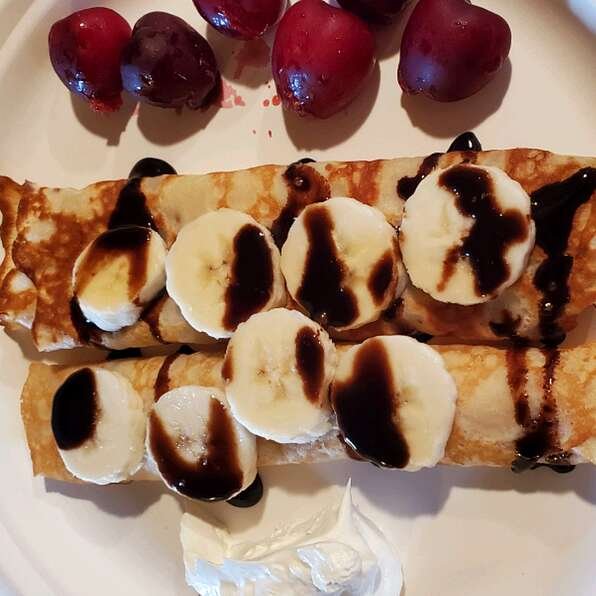

Basic Crepe

Here is a simple but delicious crepe batter which can be made in minutes. It's made from ingredients that everyone has on hand.
Nutrition Facts
Per Serving: 216 calories; protein 7.4g; carbohydrates 25.5g; fat 9.2g; cholesterol 110.7mg; sodium 235.3mg.
Ingredients
- 1 cup all-purpose flour
- 2 eggs
- 1/2 cup milk
- 1/2 cup water
- 1/4 teaspoon salt
- 2 tablespoons butter, melted
Steps
-
In a large mixing bowl, whisk together the flour and the eggs. Gradually add in the milk and water, stirring to combine.
Add the salt and butter; beat until smooth.
-
Heat a lightly oiled griddle or frying pan over medium high heat. Pour or scoop the batter onto the griddle, using approximately
1/4 cup for each crepe. Tilt the pan with a circular motion so that the batter coats the surface evenly.
-
Cook the crepe for about 2 minutes, until the bottom is light brown.
Loosen with a spatula, turn and cook the other side. Serve hot.
Cooking Notes
Make sure you're using the best non-stick cookware to make cooking much easier
Back to Homepage